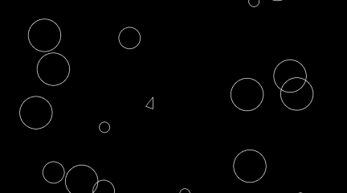

Project Description
A simple asteroids game made with Python and Pygame.
Features
- Random Asteroid Generation: The game dynamically creates asteroids of various sizes and trajectories, providing a unique challenge in each playthrough.
- Player Control: Offers responsive controls to navigate the spaceship through the asteroid field.
- Collision Detection: Implements precise collision detection between the player's ship and the asteroids.
- Game Over Condition: The game session concludes when the player's ship collides with an asteroid, adding a clear objective for the player.
Technologies Used
Backend
- Python: Main programming language for the game's logic.
- Pygame: Library used for game development.